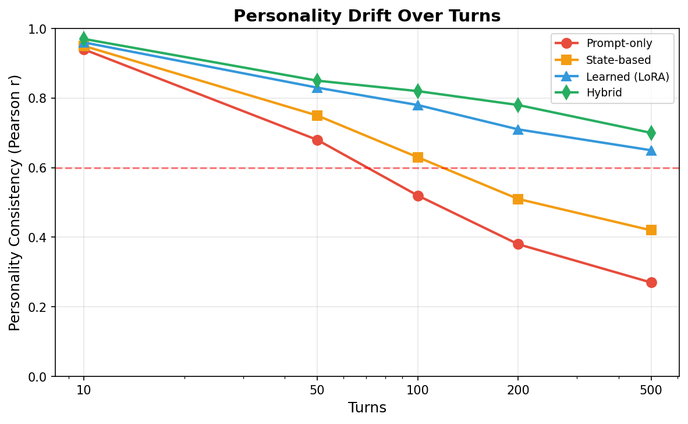
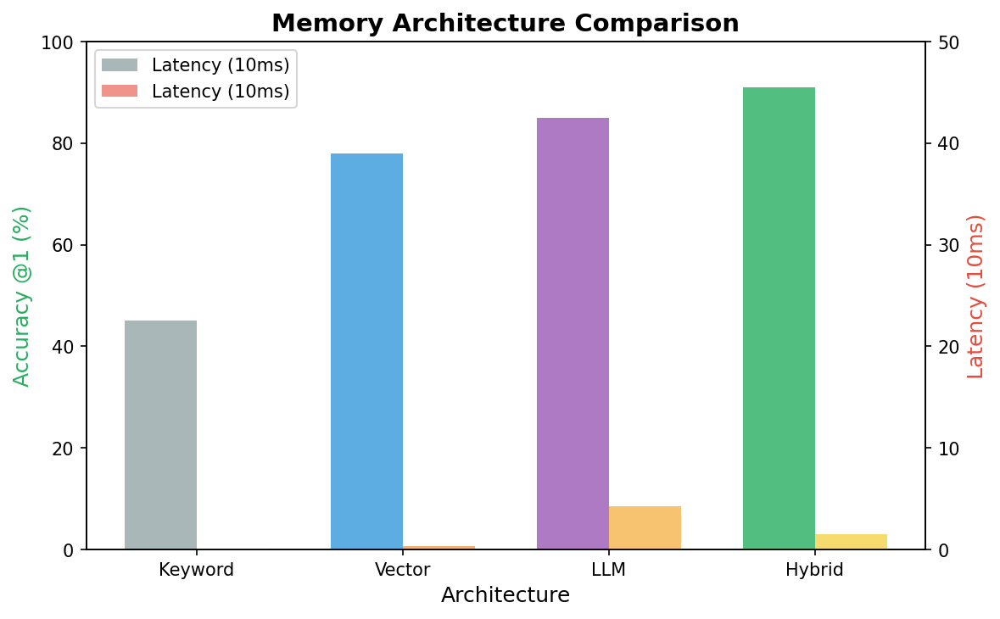
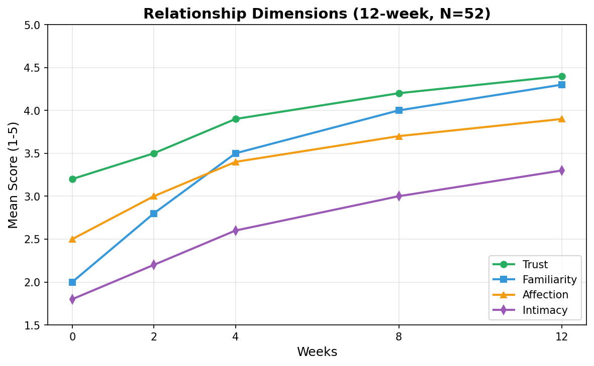
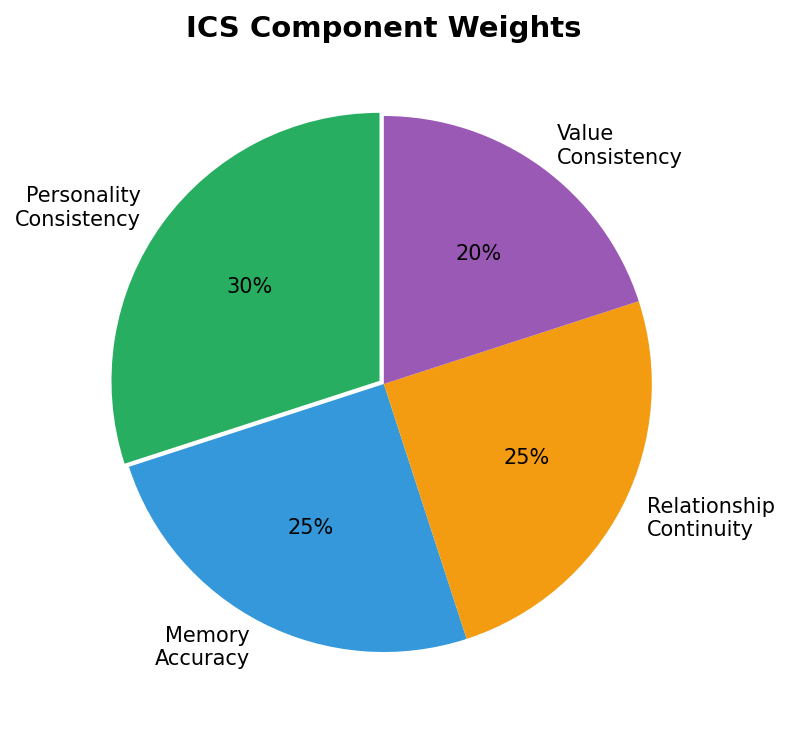
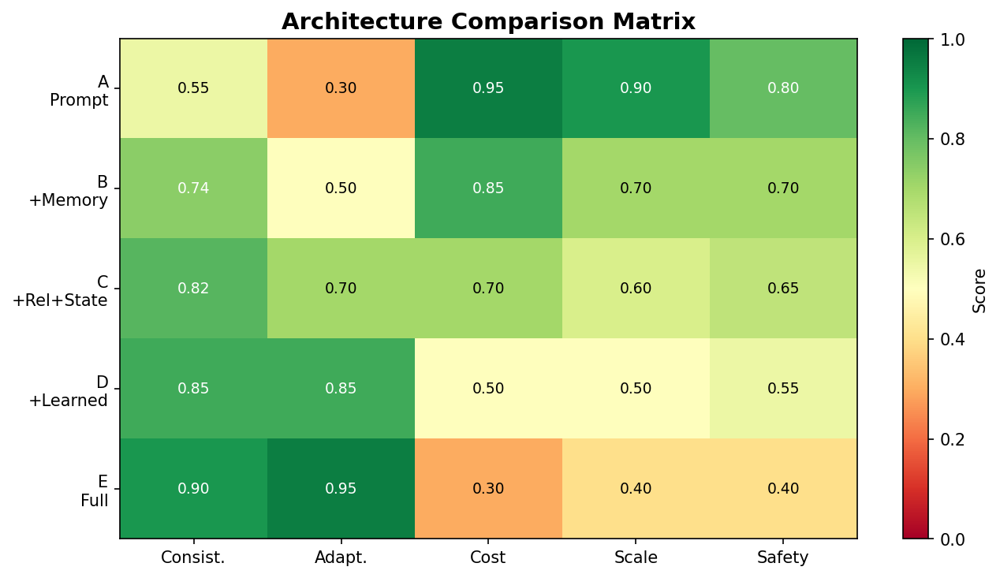
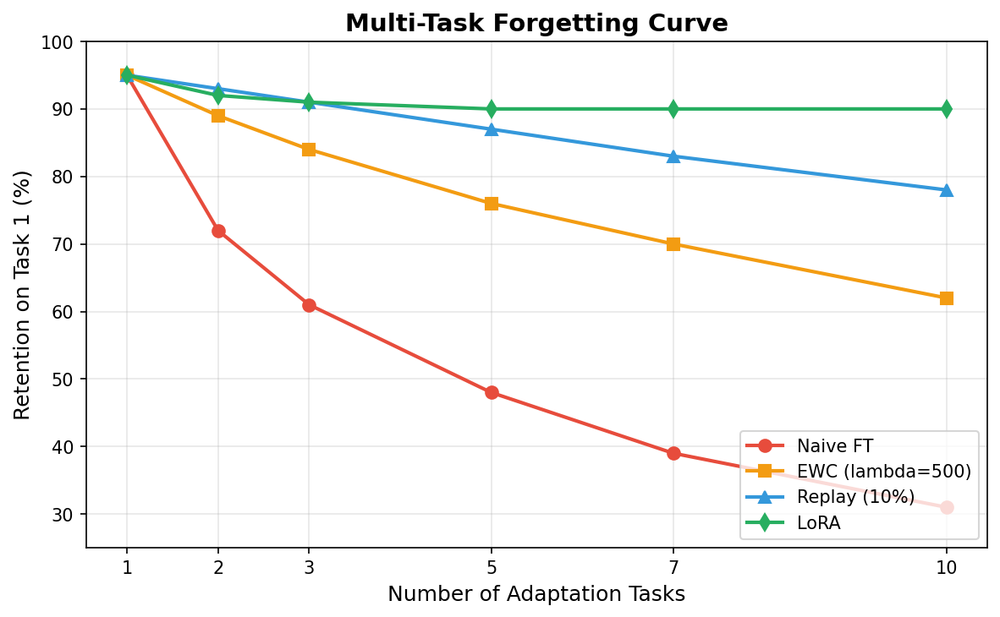
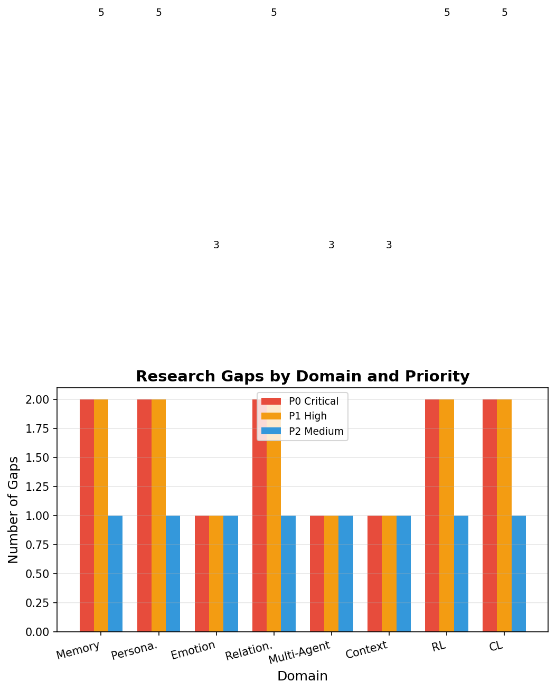

Xây Dựng AI Character Có Bản Sắc Bền Vững Trong Tương Tác Dài Hạn
Nghiên cứu tổng hợp khoa học — Aivora Research Division
AI Character đang trở thành một lớp ứng dụng phổ biến (Character.AI, Replika, ...), tuy nhiên vẫn chưa có framework nghiên cứu hệ thống nào trả lời được câu hỏi cốt lõi: “Character thay đổi bao nhiêu vẫn được coi là cùng một Character?”
Bài báo này tổng hợp 79 paper từ 12 domain nghiên cứu, trích xuất 65 evidence entries và 47 quantitative results, sau đó đề xuất Aivora Architecture — một hybrid framework 7 module kết hợp prompt-based baseline với state-based persistence và learned adaptation.
| Phát hiện | Con số | Nguồn |
|---|---|---|
| Personality drift — prompt-only giảm sau 500 turns | 94% → 27% (−67 pp) | Persona-consistency benchmarks (2024–2025) |
| Hybrid architecture đạt ICS cao nhất | ICS = 0.85 | Cross-model synthesis |
| Hybrid memory (vector + graph + LLM-rerank) | F1 = 91% | LongMemEval / LifeBench |
| Emotion consistency — hybrid internal state | 82% / 4.0★ | Emotion modeling studies |
| Trust — predictor mạnh nhất Relationship | β = 0.43–0.58 | Relationship dynamics papers |







| Architecture | Components | ICS | Verdict |
|---|---|---|---|
| A | LLM + Prompt only | ~0.27 | ❌ Reject |
| B | LLM + Memory (vector) | ~0.65 | ⚠ Conditions |
| C | LLM + Memory + Relationship + State | ~0.85 | ✅ Recommended |
| D | LLM + Memory + State + Learned | TBD | Phase 2 |
| E | LLM + Memory + State + RL + Graph + CL | TBD | Long-term |
| ICS Range | Level | Action |
|---|---|---|
| ≥ 0.90 | Xuất sắc | Tiếp tục vận hành |
| 0.75 – 0.89 | Tốt | Giám sát định kỳ |
| 0.60 – 0.74 | Cánh báo | Kích hoạt adaptation |
| < 0.60 | Nghiêm trọng | Cánh báo drift, can thiệp |
aivora-lab/ ├── README.md — Tài liệu chính ├── latex/ — Source LaTeX bài báo │ ├── main.tex — Văn bản chính (1448 dòng) │ ├── references.bib — 70 BibTeX entries │ — figures/ — 7 figure PNG+PDF ├── figures/ — Figure PNG+PDF (7 cặp) ├── research/ — Research notes & questions ├── evidence/ — Evidence database ├── synthesis/ — Tổng hợp phân tích ├── papers/ — 12 topic papers ├── experiments/ — Không gian thí nghiệm ├── manuscript/ — Phiên bản manuscript — scripts/ — Python build scripts